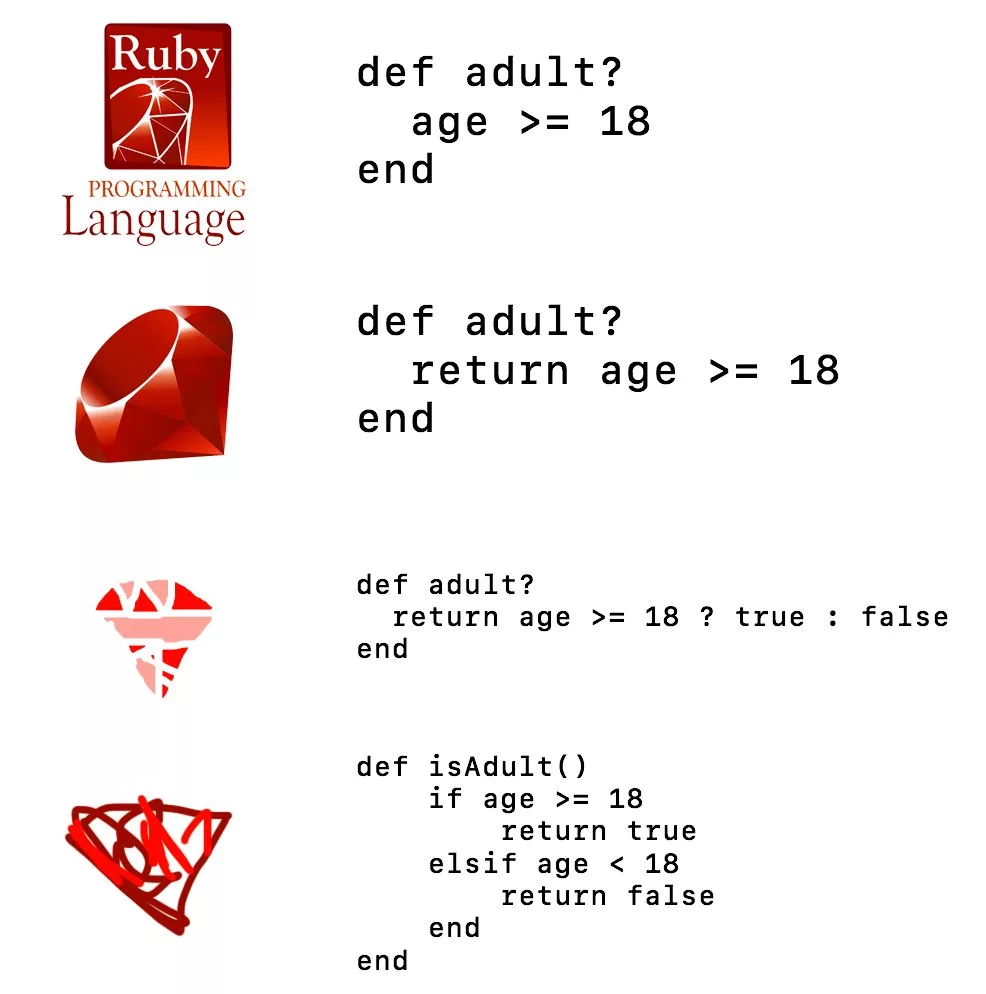

История создания
История создания языка программирования Ruby началась в начале 1990-х годов, когда японский программист Юкихиро Мацумото, известный как Matz, решил создать новый язык программирования.
Его целью было создать инструмент, который делал бы процесс написания кода более приятным и интуитивным. Ruby был вдохновлен концепциями других языков, но имел свои уникальные принципы.
Краткий обзор языка Ruby
Ruby - это интерпретируемый высокоуровневый язык программирования.
- Простота использования
- Гибкость
- Объектно-ориентированный подход

Примеры кода
# Пример простого кода на Ruby
def hello
puts 'Hello, world!'
end
hello()

Ruby — это интерпретируемый, высокоуровневый язык программирования, ориентированный на объектно-ориентированный подход.